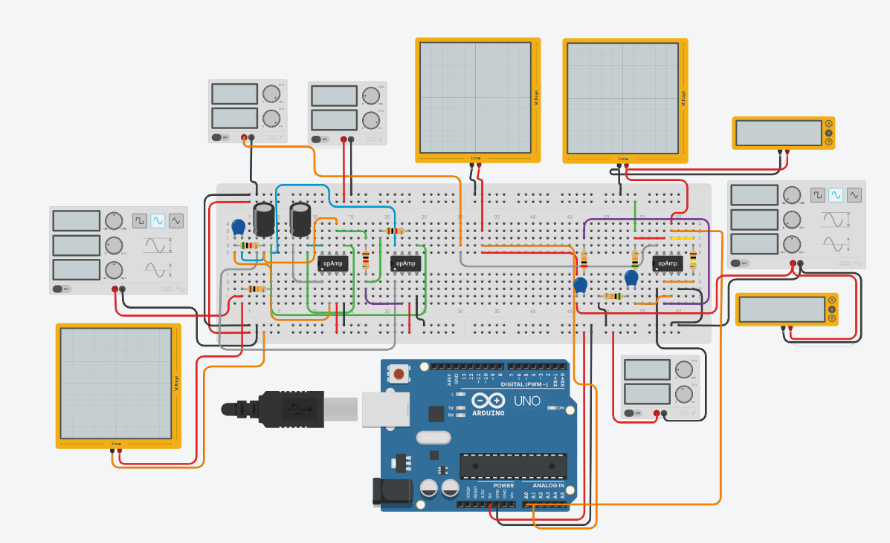

void setup()
{
Serial.begin(9600);
pinMode(0, OUTPUT);
pinMode(1, OUTPUT);
}
void loop()
{
digitalWrite(0, HIGH);
}
Требования:
- 2 конденсатора на 100nF (правые нижние)
- 1 конденсатор на 100µF (левый верхний)
- 2 поляризованных конденсатора на 1µF и напряжением 16V
- 1 резистор на 5kΩ
- 2 резистора на 1kΩ
- 1 резистор на 10kΩ
- 1 резистор на 20kΩ
- 1 резистор на 50kΩ
- 1 резистор на 100kΩ
- 1 генератор сигнала с частотой 1000 герц, ампилтудой 2V, и сдвигом 0 (левый)
- 1 генератор сигнала с частотой 1 герц, ампилтудой 0.2V, и сдвигом 0 (праый)
- 2 мультиметра в режиме "Напряжение"
- 1 осциллограф с продолжительностью 1ms (самый левый)
- 2 осциллографа с продолжительностью 100ms
- 1 источник питания с напряжением 5 и током 4.10
- 2 источника питания с напряжением 12 и током 5
- 3 операционных усилителя 741
Результат:
Напряжение будут выравниваться.
Кол-Во тестов - 8.

Обратно